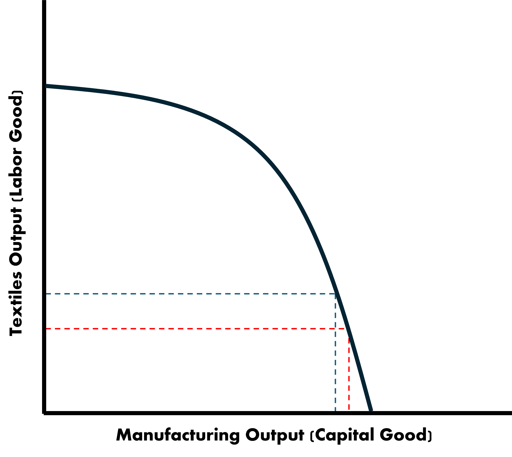
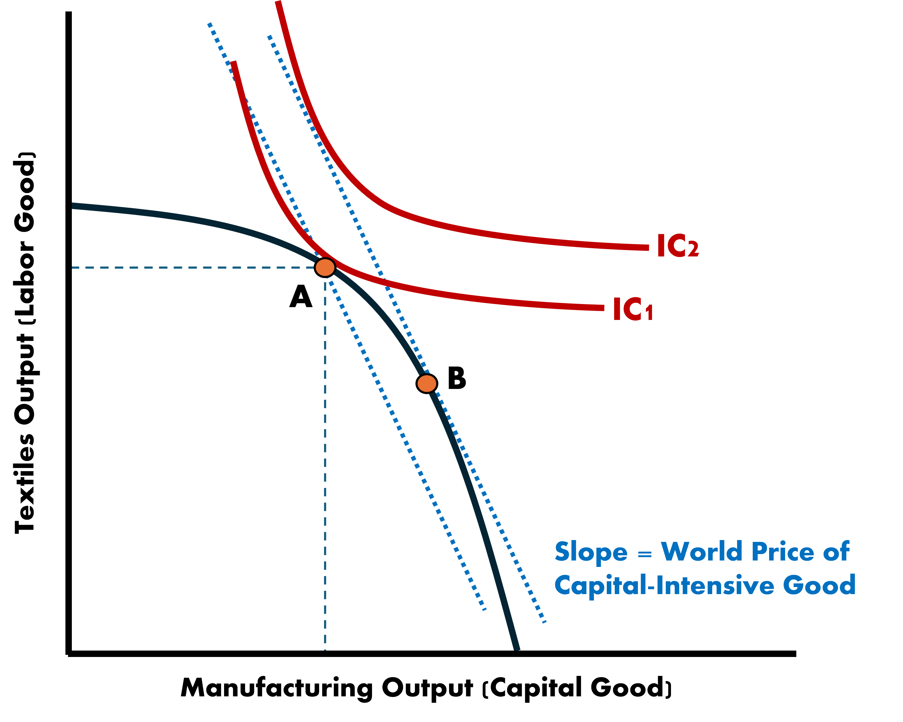
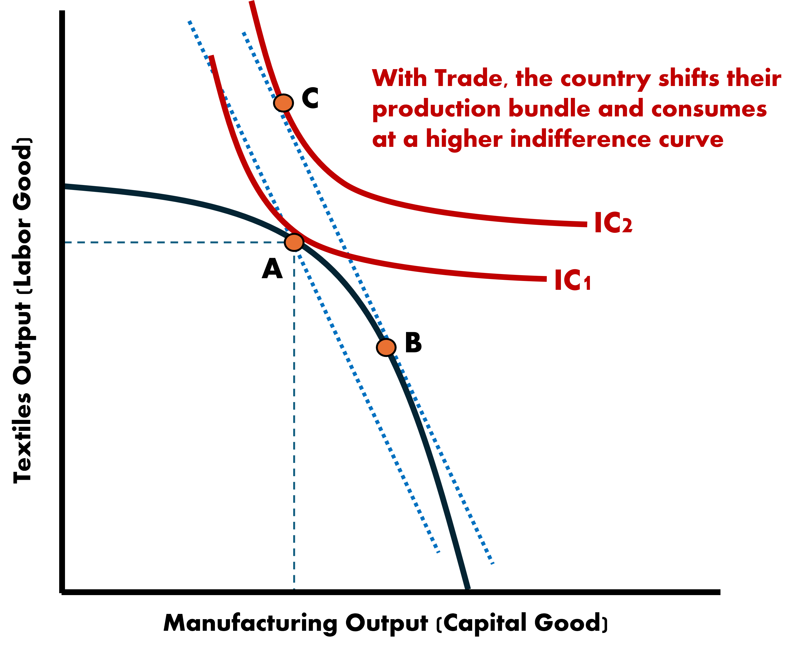

Production Possibilities Frontiers
The Ricardian Model assumed a single factor of production (labor) which was homogenous
This implied that countries face the same trade-off between goods regardless of input levels
The PPF was a straight line
. . .
The HO Model now considers combinations of factors where some specific mix of the two is most productive
- Because of this necessary mix of inputs, the PPF will be a curve
New PPF
PPF for Country A

New PPF - Increase in Labor Intensive Good

New PPF - Increase in Capital Intensive Good

New PPF
Adjustments at the extremes of the frontiers require a disproportionately large exchange in factors
- Each unit increase in one factor-good leads to an increasingly sizeable loss of the other factor-good
- Opportunity costs are rising for each type of production
- Why?
. . .
As you reallocate resources from a capital-intensive good to a labor-intensive, you need greater amounts of factors due to factor combinations being misaligned
- AKA It is not a linear trade-off
Autarky

country consumes exactly what it produces
Free Trade - World Price

Free Trade - Gains from Trade

Gains from Free Trade
Since we are trading at the world price level, we can reach higher indifference curves
- The country produces at B and consumes at C
. . .
Therefore if the country produces more of the capital-intensive product than they consume, the must be exporting a subset of that good
- That is the difference between bundle B and bundle C
. . .
In constrast, the country produces less textiles than they consume, which suggests that they are importing the difference
Comparing to the Ricardian Model
Try to remember why a country would shift their production when trading under a different world price
. . .
The country must produce where the opportunity cost is equal to the relative world price slope
. . .
The gains from trade are very similar between both models
Except that the specialization in production is not complete
- This is due to diminishing marginal productivity associated with each factor
Diminishing Marginal Productivity
Definition: Holding the other factor(s) fixed, the marginal unit increase of a given factor yields an increasingly smaller contributions to overall output
Imagine having one shovel to share between 5 workers. The workers can take turns with the shovel whenever they get tired. But how much could total work output increase if we add 10 more workers?
Not much
Diminishing Marginal Productivity
Diminishing Marginal Product of Labor

Trade & Income Distribution
In the Ricardian Model we ruled out harmful effects and suggest everyone benefits in society. Reallocated workers simply leave the shrinking industry for an expanding one.
They are able to exchange their unchanged labor supply for a larger bundle of goods
- Specialization doesn’t incur any costs/penalties
The HO Model takes a more moderate view
Rather than capital and labor, let’s consider two labor sectors:
- Skilled
- Unskilled
Industries require different combinations of skilled and unskilled labor
Heterogenous Income Effects
We will go into this further later in the course but for now let’s keep in mind that trade openness can have heterogeneous effects depending on which part of the skill bracket the worker belongs to
It can be shown that a systematic relationship exists between endowments of factors for a country and who ends up being winners and losers
I’ll show you a theoretical argument for how this can happen. Later we will look at empirical evidence, which uses applied econometric analysis.